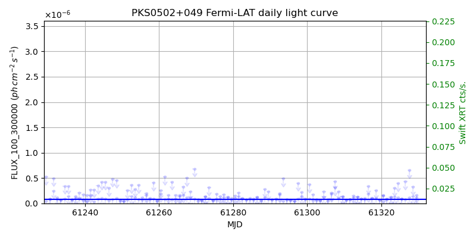
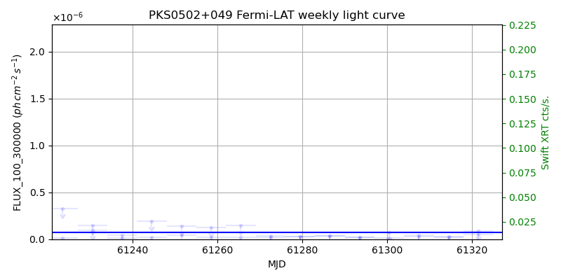
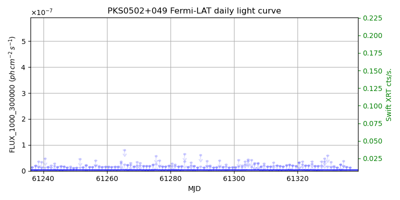
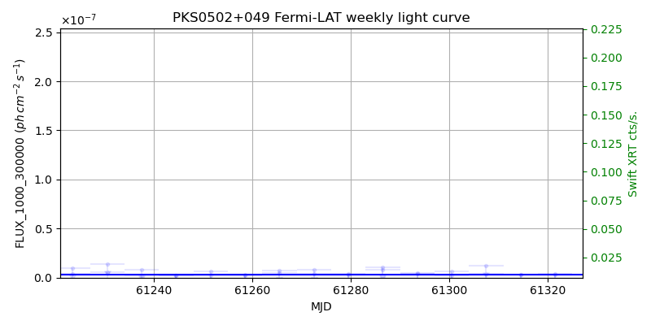

LAT Lightcurve site: https://fermi.gsfc.nasa.gov/ssc/data/access/lat/msl_lc/source/PKS_0502p049
Swift site: https://www.swift.psu.edu/monitoring/source.php?source=PKS0502+049
NED: Query
Time of last update of this page: UT: 2026-10-24 15:15 (MJD: 61337.636)
| Property | Value |
|---|---|
| R.A. | 5:05:23.28 |
| Dec. | 4:59:42.0 |
| z | 0.954 |
| 3FGL SpectrumType | LogParabola |
| 3FGL PL Index | |
| 3FGL Flux_100_300000 | 7.35e-08 1 / (s cm2) |
| 3FGL Flux_1000_300000 | 2.95e-09 1 / (s cm2) |
| 3FGL Flux >200 GeV | 7.78e-14 1 / (s cm2) |
| 3FGL Extrap. Crab >200 GeV | 0.00 |
| 3FGL Flux After EBL Absorption >200GeV | 2.21e-15 1 / (s cm2) |
| 3FGL EBL Crab Fraction >200GeV | 0.00 |

| MJD | dMJD | Flux | dFlux | Frac3FGL | FracCrab>200GeV | EBLFracCrab>200GeV |
|---|---|---|---|---|---|---|
| 61334.50 | 0.50 | 1.62e-07 | 0.00e+00 | 0.00 | 0.00 | 0.00 |
| 61335.50 | 0.50 | 9.22e-08 | 0.00e+00 | 0.00 | 0.00 | 0.00 |
| 61335.50 | 0.50 | 4.35e-07 | 0.00e+00 | 0.00 | 0.00 | 0.00 |
| 61336.50 | 0.50 | 8.11e-08 | 0.00e+00 | 0.00 | 0.00 | 0.00 |
| 61336.50 | 0.50 | 1.23e-07 | 0.00e+00 | 0.00 | 0.00 | 0.00 |

| MJD | dMJD | Flux | dFlux | Frac3FGL | FracCrab>200GeV | EBLFracCrab>200GeV |
|---|---|---|---|---|---|---|
| 61314.50 | 3.50 | 2.02e-08 | 0.00e+00 | 0.00 | 0.00 | 0.00 |
| 61321.50 | 3.50 | 5.19e-08 | 0.00e+00 | 0.00 | 0.00 | 0.00 |
| 61321.50 | 3.50 | 8.59e-08 | 0.00e+00 | 0.00 | 0.00 | 0.00 |
| 61328.50 | 3.50 | 2.99e-08 | 0.00e+00 | 0.00 | 0.00 | 0.00 |
| 61328.50 | 3.50 | 1.18e-07 | 0.00e+00 | 0.00 | 0.00 | 0.00 |

| MJD | dMJD | Flux | dFlux | Frac3FGL | FracCrab>200GeV | EBLFracCrab>200GeV |
|---|---|---|---|---|---|---|
| 61334.50 | 0.50 | 1.83e-08 | 0.00e+00 | 0.00 | 0.00 | 0.00 |
| 61335.50 | 0.50 | 1.40e-08 | 0.00e+00 | 0.00 | 0.00 | 0.00 |
| 61335.50 | 0.50 | 1.43e-08 | 0.00e+00 | 0.00 | 0.00 | 0.00 |
| 61336.50 | 0.50 | 1.34e-08 | 0.00e+00 | 0.00 | 0.00 | 0.00 |
| 61336.50 | 0.50 | 1.34e-08 | 0.00e+00 | 0.00 | 0.00 | 0.00 |

| MJD | dMJD | Flux | dFlux | Frac3FGL | FracCrab>200GeV | EBLFracCrab>200GeV |
|---|---|---|---|---|---|---|
| 61314.50 | 3.50 | 2.75e-09 | 0.00e+00 | 0.00 | 0.00 | 0.00 |
| 61321.50 | 3.50 | 3.13e-09 | 0.00e+00 | 0.00 | 0.00 | 0.00 |
| 61321.50 | 3.50 | 3.97e-09 | 0.00e+00 | 0.00 | 0.00 | 0.00 |
| 61328.50 | 3.50 | 4.27e-09 | 0.00e+00 | 0.00 | 0.00 | 0.00 |
| 61328.50 | 3.50 | 1.41e-08 | 0.00e+00 | 0.00 | 0.00 | 0.00 |
--------------------------------------------------------- Using user-supplied coords: 5:05:23.28 4:59:42.0 2000 --------------------------------------------------------- FLWO UT night of: 2026-10-25 Local Sid. @ Midnight: 01:50 Sunset (-15.0) (local, UT): 18:49 01:49 Sunrise (-15.0) (local, UT): 05:27 12:27 Moonrise (local, UT): Moonset (local, UT): Moon phase: 0.99 --------------------------------------------------------- AzTime LSID UT Obj_el Obj_az Mn_el Mn_az Sep. --------------------------------------------------------- 18:49 20:39 01:49 -27.6 64.0 26.2 94.5 61.2 19:19 21:09 02:19 -21.7 69.1 32.4 98.6 61.0 19:49 21:39 02:49 -15.6 73.8 38.6 103.2 60.8 20:19 22:09 03:19 -9.4 78.1 44.7 108.4 60.6 20:49 22:39 03:49 -1.9 82.1 50.6 114.6 60.4 21:19 23:09 04:19 3.5 86.1 56.2 122.3 60.3 21:49 23:39 04:49 9.7 90.0 61.2 132.2 60.1 22:19 00:09 05:19 16.1 94.0 65.5 145.3 59.9 22:49 00:39 05:49 22.4 98.2 68.4 162.2 59.8 23:19 01:10 06:19 28.7 102.7 69.4 182.2 59.6 23:49 01:40 06:49 34.9 107.7 68.2 202.0 59.5 00:19 02:10 07:19 40.9 113.4 65.1 218.6 59.3 00:49 02:40 07:49 46.6 120.1 60.8 231.3 59.1 01:19 03:10 08:19 51.9 128.3 55.7 240.9 59.0 01:49 03:40 08:49 56.6 138.3 50.1 248.5 58.8 02:19 04:10 09:19 60.3 150.8 44.3 254.6 58.6 02:49 04:40 09:49 62.7 165.7 38.2 259.8 58.4 03:19 05:10 10:19 63.4 182.2 32.1 264.4 58.2 03:49 05:40 10:49 62.2 198.4 26.0 268.5 58.0 04:19 06:10 11:19 59.4 212.7 19.9 272.4 57.8 04:49 06:40 11:49 55.4 224.5 13.8 276.2 57.5 05:19 07:11 12:19 50.6 234.0 7.8 279.9 57.3 05:27 07:18 12:27 49.2 236.1 6.2 280.9 57.2 --------------------------------------------------------- Moon up all night, no dark time. Dark hours >55 deg.: 0.00